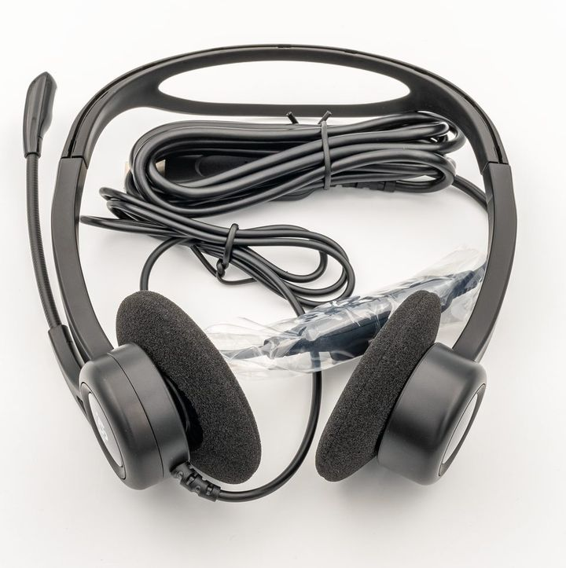

TOEIC Speaking Testとは：問題の形式、採点とスコア、受験料、申込みから結果まで（2026年）
要点まとめ
TOEIC Listening & Reading Test（L&R）は「聞く・読む」力を測るテストですが、「話す」力は測りません。話す力を証明したいときに受けるのが、TOEIC Speaking Testです。この記事では、問題の形式から申込み・結果までを、日本でテストを実施する国際ビジネスコミュニケーション協会（IIBC）と、テストを制作する米国のETSの公式情報でまとめました。日ごろの話す練習の方法は、EF English Liveを効果的に受講する方法にまとめています。

どんなテストか
英語で話す力を、20分の録音で測る
作るのは米国のETS、日本での実施はIIBC
IIBCは、TOEIC Speaking Testを「英語で話す能力」を測るテストで、11問・約20分、試験会場でパソコンを使って受けると説明しています[1]。テストを制作しているのは米国のETSで、日本ではIIBCが実施・運営しています[7][8]。
話す力と書く力をまとめて測る「TOEIC Speaking & Writing Tests（S&W）」もあります。公開テストでは、S&Wのうち話すテストだけを受けられます。これが、この記事で扱うTOEIC Speaking Testです[6]。
| 項目 | L&R | Speaking | S&W |
|---|---|---|---|
| 測る力 | 聞く・読む | 話す | 話す・書く |
| 問題数と時間 | 200問・約2時間 | 11問・約20分 | 19問・約1時間20分 |
| 受け方 | マークシート | パソコン | パソコン |
| スコア | 10〜990点（5点きざみ） | 0〜200点（10点きざみ） | 話す・書くがそれぞれ0〜200点 |
出典: IIBC「TOEIC Program DATA & ANALYSIS 2026」[6]、IIBCの公式サイト[1]。S&Wの「書く」は8問・約60分です[6]。
問題の形式
問題は5種類で、全部で11問です。問題ごとに、準備時間と解答時間が決まっています[9]。
| 問題 | 内容 | 準備時間 | 解答時間 | 採点 |
|---|---|---|---|---|
| 1〜2 音読 | アナウンスや広告などの短い英文を読み上げる | 各45秒 | 各45秒 | 0〜3 |
| 3〜4 写真描写 | 写真を見て、内容を説明する | 各45秒 | 各30秒 | 0〜3 |
| 5〜7 応答 | 身近な話題のインタビューや電話の会話という設定で、質問に答える | 0秒（質問のあと3秒） | 15秒または30秒 | 0〜3 |
| 8〜10 提示された情報に基づく応答 | 予定表などの資料を見て、質問に答える | 45秒（質問のあと3秒） | 15秒または30秒 | 0〜3 |
| 11 意見を述べる | あるテーマについて、自分の意見と理由を述べる | 45秒 | 60秒 | 0〜5 |
出典: IIBC「テストの形式と構成」[9]。採点の欄は、問題ごとの評価の段階です。
問題が進むほど、評価される項目が増える
音読は発音、意見を述べる問題は内容まで
音読では発音とイントネーション・アクセントを評価します。写真描写ではそれに文法・語彙・一貫性が加わり、応答の問題からは内容の妥当性と完成度も評価されます[9]。IIBCの公式サイトには、音声・解答例・解説の付いたサンプル問題があります[9]。
2022年6月に、形式の一部が変わった
問題10の音声は2回、問題11の準備は45秒に
同じときに、問題10の音声が流れる回数も1回から2回に変わりました[10]。IIBCは、難しさとスコアの範囲は変わらないとしています[10]。IIBCは、2021年にも問題の形式を改訂しています[11]。
当日の流れと本人確認書類
- 入場
午前の回は9時15分〜9時30分、午後の回は16時00分〜16時15分
入場時間内に来ないと受験できない[12]
- 受付
本人確認書類の確認、公式認定証に載せる写真の撮影、座席の指定
- 開始
受付が終わった人から座席に案内され、順に始める
開始時刻は全員一斉ではない[12]
- 試験
約20分。休憩はなく、途中で退室もできない
受験票はない。本人確認書類は原本を持っていく
コピーや撮影したものは認められない
TOEIC Speaking Testには受験票がありません。受験に必要な情報は、公式サイトと、申込み後に届くメールで確かめます[12]。本人確認書類は、運転免許証・パスポート・マイナンバーカードなどの有効期限内の原本で、原本をコピー・撮影したものは認められません[12]。メモは、指定された用紙にしか書けません[13]。
採点とスコアの見方
録音された解答を、認定を受けた採点者が評価する
問題ごとの評価を合計し、0〜200点に換算
ETSの受験者向けハンドブック（2022年版）によると、解答は録音され、ETSの認定を受けた採点者が採点します[2]。問題ごとの評価（0〜3、問題11は0〜5）を合計し、0〜200点のスコアに換算します[2]。ETSは、話す・書くテストは自動の仕組みより幅広く言葉の力を評価できるので、通常は人の採点者が採点するとしています[15]。
| スコア | できること（要約） |
|---|---|
| 190〜200 | 職場にふさわしい会話を続けられる。意見や複雑な要望への応答も、とてもわかりやすい |
| 160〜180 | 職場にふさわしい会話を続けられる。長く話すと、発音や文法に小さな誤りが出ることがある |
| 130〜150 | 意見や複雑な要望に適切に応えられるが、理由や説明が聞き手に伝わりにくいことがある |
| 110〜120 | ある程度は意見を言えるが、言葉があいまい、間が長いなどの問題がある |
| 80〜100 | 意見を言おうとするがうまくいかない。1文や文の一部だけで答えることがある |
| 60〜70 | 簡単なことは言えるが、意見の理由を言えない |
| 40〜50 | 意見も、その理由も言えない |
| 0〜30 | 問題のかなりの部分に答えていない |
出典: IIBC「スコアの目安」[18]をもとに筆者が要約。
スコアのほかに、発音などの評価も付く
発音とイントネーションは、それぞれ3段階
結果には、0〜200点のスコアと8段階のスコア帯ごとの評価のほか、発音、イントネーションとアクセントの評価が、それぞれHIGH・MEDIUM・LOWの3段階で付きます[3]。2022年6月からは、公式認定証から「Proficiency level（能力レベル）」の表示がなくなりました[10]。
スコアの証明は、試験日から2年が目安
何年前まで認めるかは、提出先が決める
IIBCの公式認定証の再発行は、試験日から2年以内です[3]。ETSは、2年を過ぎたスコアは報告も確認もできないとしています[2]。何年前のスコアまで認めるかは、提出先ごとに違います。たとえば人事院は、国家公務員の総合職試験の英語の加点に、試験年度の4月1日から5年前までに受けたスコアを使えるとしています[21]。
申込みから結果まで
試験は毎月1回、日曜日の午前と午後に1回ずつ行われます[5]。申込みはインターネットだけで、会員登録が必要です[4]。2026年11月29日の回を例にすると、次のような日程です。
- 10月2日
申込みの受付が始まる
- 11月13日
15時に申込みを締め切る
- 11月16〜20日
追加申込み（席が空いているときだけ。受験料は8,745円）
- 11月29日
試験（日曜日）
- 12月16日
デジタル公式認定証の発行予定日
スコアは試験日の17日後にインターネットで表示[3]
- 12月28日
紙の公式認定証の発送予定日
| 項目 | Speaking | S&W |
|---|---|---|
| 受験料 | 6,930円 | 10,450円 |
| 追加申込み期間の受験料 | 8,745円 | 13,200円 |
| 日程変更の手数料 | 1,815円 | 2,750円 |
| キャンセルの手数料 | 3,150円 | 5,000円 |
出典: IIBC「申込方法・受験料」（Speaking[4]、S&W[22]）。2026年11月10日時点。
会場は14の都道府県
北海道から福岡まで。毎回は開かない会場もある
IIBCは、北海道・宮城・東京・神奈川・千葉・埼玉・静岡・石川・愛知・京都・大阪・兵庫・広島・福岡で開催するとしています[1]。受験地別の日程表では、宮城・静岡・石川は2か月に1回の開催です[23]。
会社や学校では、オンラインで受けることもある
団体向けのIPテスト。個人では申し込めない
企業や学校などの団体がSpeakingを実施するときは、団体特別受験制度（IPテスト）のオンライン方式で、団体が決めた場所や自宅などで受けます[24]。受験料は1人6,285円（税込）で、結果は実施期間の終了から11営業日後に出ます[24]。個人では申し込めず、公式認定証も出ません[25][6]。
データで見る受験者
見方: IIBCのデータ集にある10点ごとの人数を、スコア帯ごとに足して割合にしました（筆者の計算）[6]。2025年度の公開テストの受験者は12,207人、平均は131.5点で、130〜150点の帯に約半分が入ります[6]。平均は、2023年度の129.6点、2024年度の131.0点から少しずつ上がっています[6]。
IPテストの平均は110.1点
S&Wの受験者は約5.1万人で、過去最多
2025年度のIPテストでは、Speakingの受験者は36,727人で、平均は110.1点でした[6][26]。S&W（公開テストとIPテスト）の受験者は約5.1万人で、2007年に始まって以来、最も多くなりました[26]。
見方: S&Wの受験者に、最近受けたL&Rのスコアをアンケートで聞いて集計したものです[6]。L&Rが600点台の人のSpeakingの平均は110.4点、900点以上の人は150.5点でした[6][26]。公開テストは2007年1月から、IPテストは2008年6月から2026年3月までの累計なので、今の形式になる前のデータも含みます[6]。
どんな場面で使われるか
新入社員の確認、研修の効果測定、海外赴任の条件
学校では、授業や留学の効果測定にも
IIBCは、企業ではS&Wが内定者や新入社員のレベルの確認、研修の効果測定、海外赴任の条件などに使われ、学校では授業や留学の効果測定、成績評価、就職対策に使われていると説明しています[6]。
| 対象 | Speaking |
|---|---|
| 新入社員 | 100点 |
| 中途社員 | 120点 |
| 技術部門 | 110点 |
| 営業部門 | 120点 |
| 海外部門 | 140点 |
出典: IIBCの団体向けサイト（2022年の調査）[17]。
昇進の条件に、Speakingを入れる会社もある
L&Rに加えて、Speakingの点数を求める例
IIBCの団体向けサイトは、課長への昇進にL&R 650点とSpeaking・Writingの各100点を、部長への昇進にL&R 800点と各150点を求める情報通信業の会社の例を紹介しています[17]。
国家公務員試験の加点は、L&Rだけ
人事院が国家公務員の総合職試験で英語の加点に使う試験として挙げているTOEICは、Listening & Reading Testだけです。600点以上で15点、730点以上で25点が加算されます[21]。
公式の準備方法
サンプル問題で、画面と時間の感覚をつかむ
公式サイトに、解答例の音声付きの練習がある
IIBCの「サンプル問題に挑戦」のページでは、問題の形式ごとに解答のコツと、最も高い評価にあたる解答例の音声を確かめられます（採点はされません）[29]。音読のコツとして、意味のまとまりごとに区切って読むことなどを挙げています[29]。
公式の教材とアプリ
アプリはAIが解答を分析する
公式教材『公式TOEIC Speaking & Writing ワークブック』は3,080円（税込）です[30]。ただし、2022年6月の形式の変更には対応していません[10]。ETSが開発した公式アプリ「TOEIC Pal」は、2026年2月26日に個人向けの販売が始まりました。練習問題12回分を収め、AIが発音・構成・文法・関連性・語彙の5つの観点で解答を分析します[7]。
今回確認できなかった点
- 2021年の形式の改訂の内容と、日本で適用された日
- 本番の採点にAI（自動の採点）を使っているかどうか（使っているという公式の記述はなかった）
- 「少なくとも3人の採点者」が、1つの解答を3人で採点する意味かどうか
- 2027年度の日程・受験料・形式の変更（2026年11月10日時点で発表は見つからなかった）
- 2026年度に、個人がオンラインで受けられる企画があるかどうか
- 日本の会場で使う機材（ヘッドセットの種類など）
- 録音して聞き直す練習などの効果についての公的な根拠
関連する記事
出典（30件）
閲覧日はいずれも2026年11月10日
- TOEIC Speaking Test（国際ビジネスコミュニケーション協会（IIBC））
- TOEIC Speaking & Writing Tests Examinee Handbook（PDF）（ETS）
- TOEIC Speaking Test テスト結果について（国際ビジネスコミュニケーション協会（IIBC））
- TOEIC Speaking Test 申込方法・受験料（国際ビジネスコミュニケーション協会（IIBC））
- TOEIC Speaking Test テスト日程・申込（国際ビジネスコミュニケーション協会（IIBC））
- TOEIC Program DATA & ANALYSIS 2026（PDF）（国際ビジネスコミュニケーション協会（IIBC））
- プレスリリース：TOEIC Pal を個人向けに提供開始（2026年2月26日）（国際ビジネスコミュニケーション協会（IIBC））
- プレスリリース：TOEIC Speaking Test オンライン個人受験を期間限定で実施（2025年10月28日）（国際ビジネスコミュニケーション協会（IIBC））
- TOEIC Speaking Test テストの形式と構成（国際ビジネスコミュニケーション協会（IIBC））
- TOEIC Speaking Test 一部出題形式改訂のお知らせ（2022年4月26日更新）（国際ビジネスコミュニケーション協会（IIBC））
- 『公式TOEIC Speaking & Writing ワークブック』の発売について（国際ビジネスコミュニケーション協会（IIBC））
- TOEIC Speaking Test テスト当日のご案内（国際ビジネスコミュニケーション協会（IIBC））
- TOEIC Speaking Test 受験要領（国際ビジネスコミュニケーション協会（IIBC））
- 公開テスト 受付時に認められる本人確認書類について（2026年7月3日更新）（国際ビジネスコミュニケーション協会（IIBC））
- TOEIC Research: Score Consistency（ETS）
- Best Practices for Comparing TOEIC Speaking Test Scores to Other Assessments and Standards（RM-18-05、2018年）（ETS）
- 企業・団体の主な TOEIC Program 活用目的（団体向けサイト）（国際ビジネスコミュニケーション協会（IIBC））
- TOEIC Speaking Test スコアの目安（Score Range Descriptors）（国際ビジネスコミュニケーション協会（IIBC））
- 公式データ・資料 TOEIC Speaking Test（CEFRとの対照表を含む）（国際ビジネスコミュニケーション協会（IIBC））
- TOEIC Speaking Test 公式認定証（国際ビジネスコミュニケーション協会（IIBC））
- 国家公務員採用総合職試験における英語試験の活用（PDF）（人事院）
- TOEIC Speaking & Writing Tests 申込方法・受験料（国際ビジネスコミュニケーション協会（IIBC））
- TOEIC Speaking Test 受験地別テスト日程（国際ビジネスコミュニケーション協会（IIBC））
- TOEIC Speaking Test 団体特別受験制度（団体向けサイト）（国際ビジネスコミュニケーション協会（IIBC））
- TOEIC Program IPテスト（オンライン）（団体向けサイト）（国際ビジネスコミュニケーション協会（IIBC））
- プレスリリース：TOEIC S&W、2025年度の受験者数・採用団体数がともに過去最多に（2026年7月1日）（国際ビジネスコミュニケーション協会（IIBC））
- プレスリリース：2025年TOEIC Tests 世界の国・地域別平均スコア（2026年7月15日）（国際ビジネスコミュニケーション協会（IIBC））
- プレスリリース：英語学習者のスピーキング力に関する自己評価と学習実態（2026年9月15日）（国際ビジネスコミュニケーション協会（IIBC））
- サンプル問題に挑戦（TOEIC S&W）（国際ビジネスコミュニケーション協会（IIBC））
- 公式TOEIC Speaking & Writing ワークブック（国際ビジネスコミュニケーション協会（IIBC））
写真・画像の出典（1件）
- マイク付きのヘッドセット（イメージ）
写真: PantheraLeo1359531／Wikimedia Commons（CC BY 4.0）